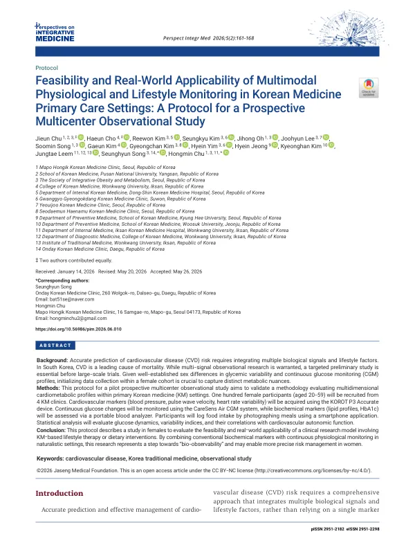

Feasibility and Real-World Applicability of Multimodal Physiological and Lifestyle Monitoring in Korean Medicine Primary Care Settings: A Protocol for a Prospective Multicenter Observational Study
Chu J, Cho H, Kim R, Kim S, Oh J, Lee J, Song S, Kim G, Kim G, Yim H, Jeong H, Kim K, Leem J, Song S, Chu H
Perspectives on Integrative Medicine 5(2):161-168

첫 장 · 오픈액세스First page · open access
논문 소개Summary
심혈관 위험을 한 번의 혈액검사가 아니라 계속 재는 생체신호와 실제 식사 기록으로 볼 수 있는지 확인하려는 예비 관찰연구의 프로토콜입니다. 한의원 네 곳에서 20세부터 59세까지 여성 100명을 모아 혈압과 맥파전달속도, 심박변이도를 재고 연속혈당측정기를 붙이며 지질과 당화혈색소도 현장에서 봅니다. 식사는 참여자가 휴대전화로 사진을 찍어 올립니다. 여성만 모은 것은 월경주기가 혈당 변동과 자율신경 지표에 주는 영향을 이 규모에서 통제할 수 없기 때문이며 남성은 다음 연구로 미뤘습니다. 프로토콜이라 결과는 없고, 저자들은 표본 수를 검정력이 아니라 실행 가능성으로 정했으므로 결론을 내리는 연구가 아니라고 밝혔습니다.
A protocol for a pilot observational study asking whether cardiovascular risk can be read from continuously measured physiological signals and real dietary records rather than a single blood test. One hundred women aged 20 to 59 will be recruited at four Korean medicine clinics; blood pressure, pulse wave velocity and heart rate variability will be measured, a continuous glucose monitor fitted, and lipids and HbA1c assessed on site. Participants log meals by photographing them on a smartphone. Enrolment is restricted to women because the effect of the menstrual cycle on glycaemic variability and cardiovascular autonomic measures cannot be controlled at this scale; men are deferred to a later study. As a protocol it reports no results, and the authors state that the sample size was set pragmatically for feasibility rather than by power calculation, so the study is not designed to draw definitive conclusions.
인용Cite
Chu J, Cho H, Kim R, Kim S, Oh J, Lee J, Song S, Kim G, Kim G, Yim H, Jeong H, Kim K, Leem J, Song S, Chu H. Feasibility and Real-World Applicability of Multimodal Physiological and Lifestyle Monitoring in Korean Medicine Primary Care Settings: A Protocol for a Prospective Multicenter Observational Study. Perspectives on Integrative Medicine. 2026;5(2):161-168. doi:10.56986/pim.2026.06.010